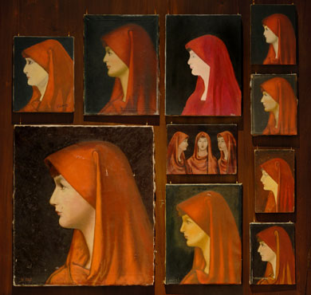

Monday, May the 4th, 2009
back to: title, date or indexes
Mr Key would like to draw to your attention a small exhibition at the National Portrait Gallery. Fabiola is a collection of mostly “amateur” portraits of Saint Fabiola, collected over the years by the Flemish artist Francis Alÿs. They are all based on a single source, a now lost 19th century painting, which means they look almost identical—but they're not, of course. The effect of seeing them all gathered together in a couple of rooms is quite mesmerising. The official gallery page is here, and there is a photograph of an earlier showing in New York here.
